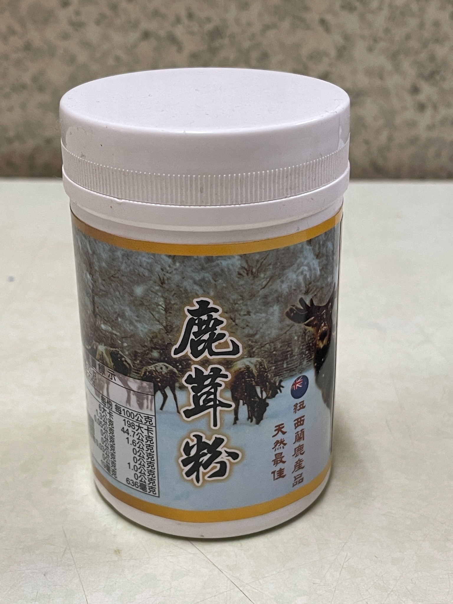

仙加味
龜鹿
首頁
產品
龜鹿系列
產品總覽
怎麼選龜鹿
龜鹿知識
龜鹿是什麼
食材介紹
使用方式
怎麼搭配
四季建議
料理食譜
知識影片
品牌
品牌故事
品牌由來
創始人故事
關於我們
客服
常見問題
聯絡我們
LINE 詢問
LINE 詢問
☰
仙加味
龜鹿
以龜板與鹿角為基礎，融入日常飲食搭配。
本站內容以食用方式、料理搭配與選購建議為主。
龜鹿系列
怎麼挑龜鹿
LINE 詢問
怎麼搭配
日常食用方式與料理搭配。
前往 →
龜鹿系列
膏／飲／湯塊／鹿茸粉。
查看 →
LINE 詢問
規格、搭配與選購建議。
聯絡 →
龜鹿系列
依食用型態快速查看適合的產品。
龜鹿膏
濃縮膏狀
了解更多 →
龜鹿飲
即飲型態
了解更多 →
龜鹿湯塊
料理搭配
了解更多 →

鹿茸粉
粉末型態
了解更多 →
怎麼挑龜鹿
依食用習慣與料理方式快速選擇。
前往 →